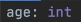

The Curse of Dynamic Typing
Dynamic typing is a unique feature of phyton that lets a variable to change its own data type. So whenever we create a varibale that contain an integer, later, we can assign it into a string, or maybe a boolean. To cure this abberation, we could just specify the data type from the start using a colon (: )

If you instead, store a string inside this age variable, this will cause a data type error.
This phyton feature is called Type Hint. A hint of a certain data type we expected. We could also apply this feature to a function to deliberately specify what type we want to return in a function. The syntax looks like this;

This will check if the return statement outputs a string and if not, raise a type error.